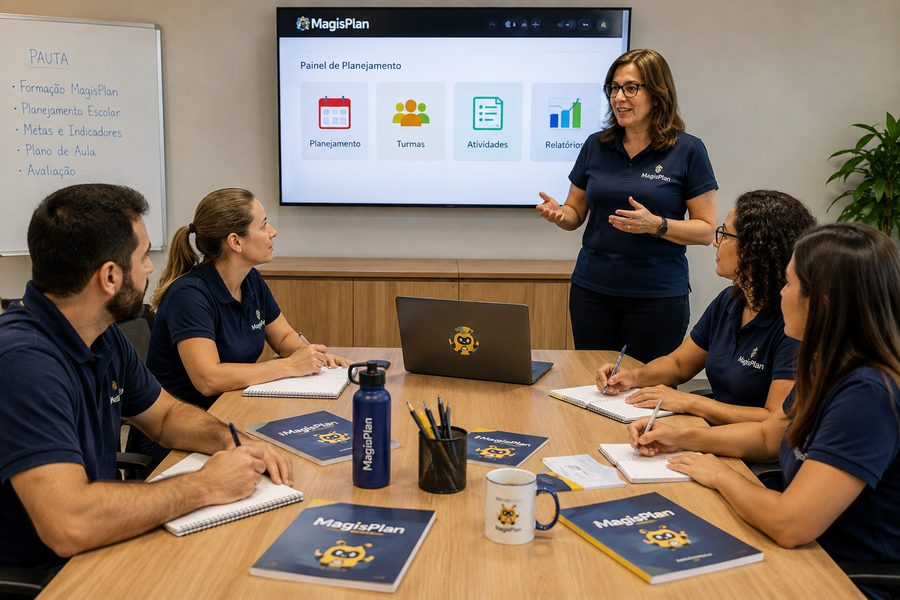
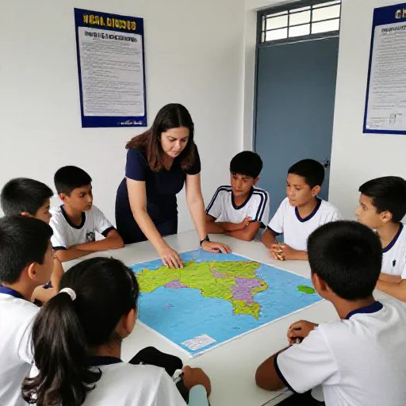
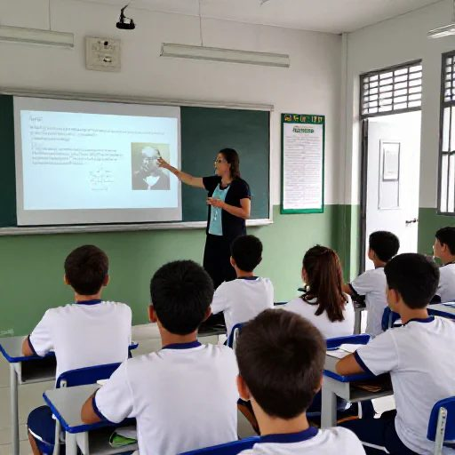

Da BNCC aos materiais em minutos
Faça o pedido correto para a IA, e obtenha um material completo com o seu jeitinho.
Aqui a BNCC vem organizada de forma simples e transforma suas habilidades em uma solicitação para a IA de acordo com a realidade de sua sala e seus alunos.
Obtenha suas aulas personalizadas
Informe como é sua sala, sua escola, seus alunos e receba um material feito para você agora.
O Magisplan transforma escolhas pedagógicas estruturadas em comandos completos, contextualizados e prontos para serem executados por diferentes inteligências artificiais.
BNCC organizada em alguns cliques
Personalização rápida de suas aulas
Escolha a IA de sua preferência
Planos de aula personalizados
Planeje todo o semestre de uma só vez
Slides para cada aula
Infográficos
Atividades
Avaliação
Mapa mental
Quiz
Cartões
O Magisplan é uma plataforma pedagógica que transforma as escolhas do professor na BNCC e as características reais de sua aula em um comando completo, contextualizado e pronto para comandar as principais IAs do mercado.
"O Magisplan organiza toda a complexidade pedagógica antes de você chegar à IA."
Veja como é rápido
Escolha a etapa e o material
Você escolhe a etapa escolar entre Educação Infantil, Ensino Fundamental e Ensino Médio e o material que deseja gerar (plano de aula, slides, etc).
Encontre a habilidade da BNCC
Você escolhe o componente, o ano, as competências, navega pelos sub-grupos da BNCC e chega até as habilidades que são mostradas.
Personalize sua aula
Você preenche o formulário de personalização de sua aula, escolhendo a metodologia, o contexto, o objetivo da aula e as características de sua sala, alunos e aula. Escolhe seu estilo de dar aula.
Escolha a IA
Você escolhe qual será a Inteligência Artificial que deseja que gere o seu material.
Gere o material
Você cola o texto gerado pelo Magisplan na IA escolhida e aguarda gerar o material.
Baixe e use
Você baixa o material em seu computador ou celular.
Veja o Magisplan em ação



Ganhe tempo e agilidade agora.
Ganhe acesso ilimitado por apenas R$ 26,20 por mês
Entrar no Magisplan"Materiais adaptados à sua realidade hoje."